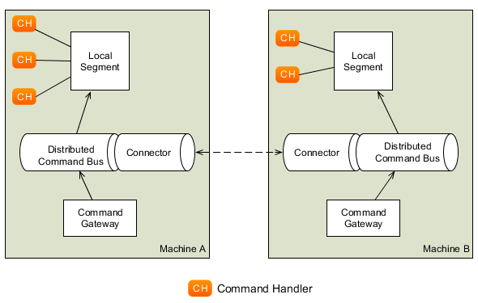

Infrastructure
Command dispatching, as exemplified in the Dispatching Commands page, has a number of advantages. Firstly, it constructs an object that clearly describes the intent of the client. By logging the command, you store both the intent and the related data for future reference. Command handling also makes it easy to expose your command processing components to remote clients, via web services for example.
Testing also becomes a lot easier. You could define test scripts by just defining the starting situation (given), command to execute (when) and expected results (then) by listing a number of events and commands (see Testing for more on this).
The last major advantage is that it is really easy to switch between synchronous and asynchronous, as well as local versus distributed command processing.
This does not mean command dispatching using explicit command objects is the only way to do it. The goal of Axon is not to prescribe a specific way of working, but to support you doing it your way, while providing best practices as the default behavior. It is still possible to use a service layer that you can invoke to execute commands. The method will just need to start a unit of work (see Unit of Work) and perform a commit or rollback on it when the method is finished.
The next sections provide an overview of the tasks related to setting up a command dispatching infrastructure with the Axon Framework.
The API-friendlier CommandGateway is mentioned, as well as the CommandBus in both a local and distributed environment.
The CommandGateway
The CommandGateway is a convenient interface towards the command dispatching mechanism.
While you are not required to use a gateway to dispatch commands, it is generally the easiest option to do so.
There are two ways to use a Command Gateway. The first is to use the CommandGateway interface and the DefaultCommandGateway implementation provided by Axon.
The command gateway provides a number of methods that allow you to send a command and wait for a result either synchronously, with a timeout or asynchronously.
The other option is perhaps the most flexible of all.
You can turn almost any interface into a command gateway using the CommandGatewayFactory.
This allows you to define your application’s interface using strong typing and declaring your own (checked) business exceptions.
Axon will automatically generate an implementation for that interface at runtime.
Configuring the CommandGateway
Both your custom Command Gateway and the one provided by Axon need to at least be configured with a Command Bus.
In addition, the Command Gateway can be configured with a RetryScheduler, `CommandDispatchInterceptor`s, and `CommandCallback`s.
RetryScheduler
The RetryScheduler is capable of scheduling retries when command execution has failed.
When a command fails due to an exception that is explicitly non-transient, no retries are done at all.
Note that the retry scheduler is only invoked when a command fails due to a RuntimeException.
Checked exceptions are regarded as a "business exception" and will never trigger a retry.
Currently, two implementations exist:
-
The
IntervalRetrySchedulerwill retry a given command at set intervals until it succeeds, or a maximum number of retries has taken place. -
The
ExponentialBackOffIntervalRetrySchedulerretries failed commands with an exponential back-off interval until it succeeds, or a maximum number of retries has taken place.
CommandDispatchInterceptor
`CommandDispatchInterceptor`s allow modification of `CommandMessage`s prior to dispatching them to the Command Bus. In contrast to `CommandDispatchInterceptor`s configured on the Command Bus, these interceptors are only invoked when messages are sent through this Gateway. For example, these interceptors could be used to attach metadata to a command or perform validation.
CommandCallback
A CommandCallback can be provided to the Command Gateway upon a regular send, specifying what to do with the command handling result.
It works with the CommandMessage and CommandResultMessage classes, thus allowing for some generic behavior for all Commands sent through this gateway regardless of their type.
Creating a custom command gateway - CommandGatewayFactory
Axon allows a custom interface to be used as a CommandGateway.
The behavior of each method declared in the interface is based on the parameter types, return type and declared exception.
Using this gateway is not only convenient, it makes testing a lot easier by allowing you to mock your interface where needed.
This is how parameters affect the behavior of the command gateway:
-
The first parameter is expected to be the actual command object to dispatch.
-
Parameters annotated with
@MetaDataValuewill have their value assigned to the metadata field with the identifier passed as annotation parameter. -
Parameters of type
MetaDatawill be merged with theMetaDataon theCommandMessage. Metadata defined by latter parameters will overwrite the metadata of earlier parameters, if their key is equal. -
Parameters of type
CommandCallbackwill have theironResult(CommandMessage<? extends C>, CommandResultMessage<? extends R>)invoked after the command has been handled. Although theCommandCallbackprovides a means to deal with the result of command handling, this is no impact on whether you can define a return type on the custom command gateway. In case both a callback and return type are defined, the invocations of the callback will always match with the return value (or exception). Lastly, know that you may pass in severalCommandCallbackinstances, which all will be invoked in order. -
The last two parameters indicate a timeout and may be of types
long(orint) andTimeUnit. The method will block at most as long as these parameters indicate. How the method reacts to a timeout depends on the exceptions declared on the method (see below). Note that if other properties of the method prevent blocking altogether, a timeout will never occur.
The declared return value of a method will also affect its behavior:
-
A
voidreturn type will cause the method to return immediately, unless there are other indications on the method that one would want to wait, such as a timeout or declared exceptions. -
Return types of
Future,CompletionStageandCompletableFuturewill cause the method to return immediately (granted you have configured aCommandBususing its own threads!). You can access the result of the command handler using theCompletableFutureinstance returned from the method. Exceptions and timeouts declared on the method are ignored. -
Any other return type will cause the method to block until a result is available. The result is cast to the return type (causing a
ClassCastExceptionif the types do not match).
Exceptions have the following effect:
-
Any declared checked exception will be thrown if the command handler (or an interceptor) threw one of that type. If a checked exception is thrown that has not been declared, it is wrapped in a
CommandExecutionException, which is aRuntimeException. -
When a timeout occurs, the default behavior is to return
nullfrom the method. This can be changed by declaring aTimeoutException. If this exception is declared, aTimeoutExceptionis thrown instead. -
When a thread is interrupted while waiting for a result, the default behavior is to return null. In that case, the interrupted flag is set back on the thread. By declaring an
InterruptedExceptionon the method, this behavior is changed to throw that exception instead. The interrupt flag is removed when the exception is thrown, consistent with the java specification. -
Other runtime exceptions may be declared on the method, but will not have any effect other than clarification to the API user.
Finally, there is the possibility to use annotations:
-
As specified in the parameter section, the
@MetaDataValueannotation on a parameter will have the value of that parameter added as metadata value. The key of the metadata entry is provided as parameter to the annotation. -
Methods annotated with
@Timeoutwill block at most the indicated amount of time. This annotation is ignored if the method declares timeout parameters. -
Classes annotated with
@Timeoutwill cause all methods declared in that class to block at most the indicated amount of time, unless they are annotated with their own@Timeoutannotation or specify timeout parameters.
public interface MyGateway {
// fire and forget
void sendCommand(MyPayloadType command);
// method that attaches metadata and will wait for a result for 10 seconds
@Timeout(value = 10, unit = TimeUnit.SECONDS)
ReturnValue sendCommandAndWaitForAResult(MyPayloadType command,
@MetaDataValue("userId") String userId);
// alternative that throws exceptions on timeout
@Timeout(value = 20, unit = TimeUnit.SECONDS)
ReturnValue sendCommandAndWaitForAResult(MyPayloadType command)
throws TimeoutException, InterruptedException;
// this method will also wait, caller decides how long
void sendCommandAndWait(MyPayloadType command, long timeout, TimeUnit unit)
throws TimeoutException, InterruptedException;
}
// To configure a gateway:
public class AxonConfig {
// omitting other configuration methods...
public MyGateway customCommandGateway(CommandBus commandBus) {
CommandGatewayFactory factory = CommandGatewayFactory.builder()
.commandBus(commandBus)
.build();
return factory.createGateway(MyGateway.class);
}
}The command bus - local
The local command bus is the mechanism that dispatches commands to their respective command handlers within an Axon application.
Suggestions on how to use the CommandBus can be found here.
Several flavors of the command bus, with differing characteristics, exist within the framework.
SimpleCommandBus
The SimpleCommandBus is, as the name suggests, the simplest implementation.
It does straightforward processing of commands in the thread that dispatches them.
After a command is processed, the modified aggregates are saved and generated events are published in that same thread.
In most scenarios, such as web applications, this implementation will suit your needs.
Like most CommandBus implementations, the SimpleCommandBus allows interceptors to be configured.
`CommandDispatchInterceptor`s are invoked when a command is dispatched on the command bus.
The `CommandHandlerInterceptor`s are invoked before the actual command handler method is, allowing you to do modify or block the command.
See Command Interceptors for more information.
Since all command processing is done in the same thread, this implementation is limited to the JVMs boundaries.
The performance of this implementation is good, but not extraordinary.
To cross JVM boundaries, or to get the most out of your CPU cycles, check out the other CommandBus implementations.
-
Configuration API
-
Spring Boot
public class AxonConfig {
// omitting other configuration methods...
public void configureSimpleCommandBus(Configurer configurer) {
configurer.configureCommandBus(config -> {
CommandBus commandBus = SimpleCommandBus
.builder()
.transactionManager(config.getComponent(TransactionManager.class))
.spanFactory(config.spanFactory())
.messageMonitor(config.messageMonitor(SimpleCommandBus.class, "commandBus"))
// ...
.build();
commandBus.registerHandlerInterceptor(
new CorrelationDataInterceptor<>(config.correlationDataProviders())
);
return commandBus;
});
}
}@Configuration
public class AxonConfig {
// omitting other configuration methods...
@Bean
public CommandBus simpleCommandBus(TransactionManager transactionManager,
GlobalMetricRegistry metricRegistry,
SpanFactory spanFactory) {
return SimpleCommandBus.builder()
.transactionManager(transactionManager)
.messageMonitor(metricRegistry.registerCommandBus("commandBus"))
.spanFactory(spanFactory)
// ...
.build();
}
@Bean
public ConfigurerModule commandBusCorrelationConfigurerModule() {
return configurer -> configurer.onInitialize(
config -> config.commandBus().registerHandlerInterceptor(
new CorrelationDataInterceptor<>(config.correlationDataProviders())
)
);
}
}AsynchronousCommandBus
As the name suggests, the AsynchronousCommandBus implementation executes commands asynchronously from the thread that dispatches them.
It uses an Executor to perform the actual handling logic on a different Thread.
By default, the AsynchronousCommandBus uses an unbounded cached thread pool.
This means a thread is created when a command is dispatched.
Threads that have finished processing a command are reused for new commands.
Threads are stopped if they have not processed a command for 60 seconds.
Alternatively, an Executor instance may be provided to configure a different threading strategy.
Note that the AsynchronousCommandBus should be shut down when stopping the application, to make sure any waiting threads are properly shut down.
To shut down, call the shutdown() method.
This will also shut down any provided Executor instance, if it implements the ExecutorService interface.
-
Configuration API
-
Spring Boot
public class AxonConfig {
// omitting other configuration methods...
public void configureAsynchronousCommandBus(Configurer configurer) {
configurer.configureCommandBus(config -> {
CommandBus commandBus = AsynchronousCommandBus
.builder()
.transactionManager(config.getComponent(TransactionManager.class))
.spanFactory(config.spanFactory())
.messageMonitor(config.messageMonitor(
AsynchronousCommandBus.class, "commandBus"
))
// ...
.build();
commandBus.registerHandlerInterceptor(
new CorrelationDataInterceptor<>(config.correlationDataProviders())
);
return commandBus;
});
}
}@Configuration
public class AxonConfig {
// omitting other configuration methods...
@Bean
public CommandBus asynchronousCommandBus(TransactionManager transactionManager,
GlobalMetricRegistry metricRegistry,
SpanFactory spanFactory) {
return AsynchronousCommandBus
.builder()
.transactionManager(transactionManager)
.messageMonitor(metricRegistry.registerCommandBus("commandBus"))
.spanFactory(spanFactory)
// ...
.build();
}
@Bean
public ConfigurerModule commandBusCorrelationConfigurerModule() {
return configurer -> configurer.onInitialize(
config -> config.commandBus().registerHandlerInterceptor(
new CorrelationDataInterceptor<>(config.correlationDataProviders())
)
);
}
}DisruptorCommandBus
The SimpleCommandBus has reasonable performance characteristics.
The fact that the SimpleCommandBus needs locking to prevent multiple threads from concurrently accessing the same aggregate causes processing overhead and lock contention.
The DisruptorCommandBus takes a different approach to multi-threaded processing.
Instead of having multiple threads each doing the same process, there are multiple threads, each taking care of a piece of the process.
The DisruptorCommandBus uses the Disruptor, a small framework for concurrent programming, to achieve much better performance, by just taking a different approach to multi-threading.
Instead of doing the processing in the calling thread, the tasks are handed off to two groups of threads, that each take care of a part of the processing.
The first group of threads will execute the command handler, changing an aggregate’s state.
The second group will store and publish the events to the event store.
While the DisruptorCommandBus easily outperforms the SimpleCommandBus by a factor of 4(!), there are a few limitations:
-
The
DisruptorCommandBusonly supports event sourced aggregates. This Command Bus also acts as a Repository for the aggregates processed by the Disruptor. To get a reference to the Repository, usecreateRepository(AggregateFactory). -
A command can only result in a state change in a single aggregate instance.
-
When using a cache, it allows only a single aggregate for a given identifier. This means it is not possible to have two aggregates of different types with the same identifier.
-
Commands should generally not cause a failure that requires a rollback of the unit of work. When a rollback occurs, the
DisruptorCommandBuscannot guarantee that commands are processed in the order they were dispatched. Furthermore, it requires a retry of a number of other commands, causing unnecessary computations. -
When creating a new aggregate instance, commands updating that created instance may not all happen in the exact order as provided. Once the aggregate is created, all commands will be executed exactly in the order they were dispatched. To ensure the order, use a callback on the creating command to wait for the aggregate being created. It shouldn’t take more than a few milliseconds.
To construct a DisruptorCommandBus instance, you need an EventStore.
This component is explained in the Event Bus and Event Store section.
Optionally, you can provide a DisruptorConfiguration instance, which allows you to tweak the configuration to optimize performance for your specific environment:
-
Buffer size - the number of slots on the ring buffer to register incoming commands. Higher values may increase throughput, but also cause higher latency. Must always be a power of 2. Defaults to 4096.
-
ProducerType- indicates whether the entries are produced by a single thread, or multiple. Defaults to multiple. -
WaitStrategy- the strategy to use when the processor threads (the three threads taking care of the actual processing) need to wait for each other. The best wait strategy depends on the number of cores available in the machine, and the number of other processes running. If low latency is crucial, and theDisruptorCommandBusmay claim cores for itself, you can use theBusySpinWaitStrategy. To make the command bus claim less of the CPU and allow other threads to do processing, use theYieldingWaitStrategy. Finally, you can use theSleepingWaitStrategyandBlockingWaitStrategyto allow other processes a fair share of CPU. The latter is suitable if the Command Bus is not expected to be processing full-time. Defaults to theBlockingWaitStrategy. -
Executor- sets the Executor that provides the Threads for theDisruptorCommandBus. This executor must be able to provide at least four threads. Three of the threads are claimed by the processing components of theDisruptorCommandBus. Extra threads are used to invoke callbacks and to schedule retries in case an Aggregate’s state is detected to be corrupt. Defaults to aCachedThreadPoolthat provides threads from a thread group called"DisruptorCommandBus". -
TransactionManager- defines the transaction manager that should ensure that the storage and publication of events are executed within a transaction. -
InvokerInterceptors- defines the `CommandHandlerInterceptor`s that are to be used in the invocation process. This is the process that calls the actual Command Handler method. -
PublisherInterceptors- defines the `CommandHandlerInterceptor`s that are to be used in the publication process. This is the process that stores and publishes the generated events. -
RollbackConfiguration- defines on which Exceptions a Unit of Work should be rolled back. Defaults to a configuration that rolls back on unchecked exceptions. -
RescheduleCommandsOnCorruptState- indicates whether Commands that have been executed against an Aggregate that has been corrupted (for example, because a Unit of Work was rolled back) should be rescheduled. Iffalsethe callback’sonFailure()method will be invoked. Iftrue(the default), the command will be rescheduled instead. -
CoolingDownPeriod- sets the number of seconds to wait to make sure all commands are processed. During the cooling down period, no new commands are accepted, but existing commands are processed, and rescheduled when necessary. The cooling down period ensures that threads are available for rescheduling the commands and calling callbacks. Defaults to1000(1 second). -
Cache- sets the cache that stores aggregate instances that have been reconstructed from the Event Store. The cache is used to store aggregate instances that are not in active use by the disruptor. -
InvokerThreadCount- the number of threads to assign to the invocation of command handlers. A good starting point is half the number of cores in the machine. -
PublisherThreadCount- the number of threads to use to publish events. A good starting point is half the number of cores, and could be increased if a lot of time is spent on I/O. -
SerializerThreadCount- the number of threads to use to pre-serialize events. This defaults to1, but is ignored if no serializer is configured. -
Serializer- the serializer to perform pre-serialization with. When a serializer is configured, theDisruptorCommandBuswill wrap all generated events in aSerializationAwaremessage. The serialized form of the payload and metadata is attached before they are published to the Event Store.
-
Configuration API
-
Spring Boot
public class AxonConfig {
// omitting other configuration methods...
public void configureDisruptorCommandBus(Configurer configurer) {
configurer.configureCommandBus(config -> {
CommandBus commandBus = DisruptorCommandBus
.builder()
.transactionManager(config.getComponent(TransactionManager.class))
.messageMonitor(config.messageMonitor(
DisruptorCommandBus.class, "commandBus"
))
.bufferSize(4096)
// ...
.build();
commandBus.registerHandlerInterceptor(new CorrelationDataInterceptor<>(config.correlationDataProviders()));
return commandBus;
});
}
}@Configuration
public class AxonConfig {
// omitting other configuration methods...
@Bean
public CommandBus disruptorCommandBus(TransactionManager transactionManager,
GlobalMetricRegistry metricRegistry) {
return DisruptorCommandBus
.builder()
.transactionManager(transactionManager)
.messageMonitor(metricRegistry.registerCommandBus("commandBus"))
.bufferSize(4096)
// ...
.build();
}
@Bean
public ConfigurerModule commandBusCorrelationConfigurerModule() {
return configurer -> configurer.onInitialize(config -> config
.commandBus().registerHandlerInterceptor(
new CorrelationDataInterceptor<>(config.correlationDataProviders())
)
);
}
}The command bus - distributed
Oftentimes you would want multiple instances of command buses in different JVMs to act as one. Commands dispatched on one JVM’s command bus should be seamlessly transported to a command handler in another JVM while sending back any results. That is where the concept of 'distributing the command bus' comes in.
There are a couple of concepts that are configurable, regardless of the type of distributed command bus that is being used:
Local segment
Unlike the local CommandBus implementations, the distributed command buses do not invoke any handlers at all.
All they do is form a "bridge" between command bus implementations on different JVMs, delegating any received commands to the so-called local segment.
By default, this local segment is the SimpleCommandBus.
You can configure the local segment to be any of the other local command buses too, like the AsynchronousCommandBus and DisruptorCommandBus.
The details of how to configure the local segment are shown in the implementation sections.
Load factor
The load factor defines the amount of load an Axon application would carry compared to other instances. For example, if you have a two machine set up, each with a load factor of 100, they will both carry an equal amount of load.
Increasing the load factor to 200 on both would still mean that both machines receive the same amount of load. This points out that the load factor will only change the load amongst systems if the values are not equal. Doing so would make sense in a heterogeneous application landscape, where the faster machines should deal with a bigger portion of command handling than the slower machines.
The default load factor set for the distributed CommandBus implementations is 100.
The configuration changes slightly per distributed implementation and as such will be covered in those sections.
Routing strategy
Commands should be routed consistently to the same application, especially those targeted towards a specific Aggregate.
This ensures a single instance is in charge of the targeted aggregate, resolving the concurrent access issue and allowing for optimization like caching to work as designed.
The component dealing with the consistent routing in an Axon application is the RoutingStrategy.
The RoutingStrategy receives a CommandMessage and based on the message returns the routing key to use.
Two commands with the same routing key will always be routed to the same segment, as long as there is no topology change in the distributed set-up.
At the moment, there are five implementations of the RoutingStrategy.
Three of these are intended to be fallback solutions, in case the routing key cannot be resolved:
-
The
AnnotationRoutingStrategy- the default routing strategy expects theTargetAggregateIdentifierorRoutingKeyannotation to be present on a field inside the command class. The annotated field or getter is searched, and the contents will be returned as the routing key for that command. -
The
MetaDataRoutingStrategy- uses a property defined during creation of this strategy to fetch the routing key from theCommandMessage’s `MetaData. -
The
ERRORUnresolvedRoutingKeyPolicy- the default fallback that will cause an exception to be thrown when the routing key cannot be resolved from the givenCommandMessage. -
The
RANDOM_KEYUnresolvedRoutingKeyPolicy- will return a random value when a routing key cannot be resolved from theCommandMessage. This means that those commands will be routed to a random segment of the command bus. -
The
STATIC_KEYUnresolvedRoutingKeyPolicy- will return a static key (named "unresolved") for unresolved routing keys. This policy routes all commands to the same segment, as long as the configuration of segments does not change.
The AnnotationRoutingStrategy and MetaDataRoutingStrategy are considered the full implementations to configure.
The ERROR, RANDOM_KEY and STATIC_KEY are fallback routing strategies that should be configured on the annotation or meta-data implementations.
To get a grasp how these are constructed, consider the following sample:
-
AnnotationRoutingStrategy -
MetaDataRoutingStrategy
// A custom annotation can be used to drive the AnnotationRoutingStrategy
@interface CustomRoutingAnnotation {
}
public class AxonConfig {
// omitting other configuration methods...
public RoutingStrategy routingStrategy() {
return AnnotationRoutingStrategy
.builder()
.annotationType(CustomRoutingAnnotation.class)
.fallbackRoutingStrategy(UnresolvedRoutingKeyPolicy.STATIC_KEY)
.build();
}
}public class AxonConfig {
// omitting other configuration methods...
public RoutingStrategy routingStrategy() {
return MetaDataRoutingStrategy
.builder()
.metaDataKey("my-routing-key")
.fallbackRoutingStrategy(UnresolvedRoutingKeyPolicy.RANDOM_KEY)
.build();
}
}Of course, a custom implementation of the RoutingStrategy can also be provided when necessary.
When we need to deviate from the default AnnotationRoutingStrategy, we should configure it like so:
-
Configuration API
-
Spring Boot
public class AxonConfig {
// omitting other configuration methods...
public void configureRoutingStrategy(Configurer configurer, YourRoutingStrategy yourRoutingStrategy) {
configurer.registerComponent(RoutingStrategy.class, config -> yourRoutingStrategy);
}
}@Configuration
public class AxonConfig {
// omitting other configuration methods...
@Bean
public RoutingStrategy routingStrategy() {
return /* construct your routing strategy */;
}
}AxonServerCommandBus
The AxonServerCommandBus is the default distributed CommandBus implementation that is set by the framework.
It connects to AxonServer, with which it can send and receive commands.
As it is the default, configuring it is relatively straightforward:
-
Configuration API
-
Spring Boot
Declare dependencies:
<!-- somewhere in the POM file... -->
<dependencyManagement>
<!-- amongst the dependencies... -->
<dependencies>
<dependency>
<groupId>org.axonframework</groupId>
<artifactId>axon-bom</artifactId>
<version>${version.axon}</version>
<type>pom</type>
<scope>import</scope>
</dependency>
</dependencies>
<!-- ... -->
</dependencyManagement>
<!-- ... -->
<dependencies>
<!-- amongst the dependencies... -->
<dependency>
<groupId>org.axonframework</groupId>
<artifactId>axon-server-connector</artifactId>
</dependency>
<dependency>
<groupId>org.axonframework</groupId>
<artifactId>axon-configuration</artifactId>
</dependency>
<!-- ... -->
</dependencies>Configure your application:
public class AxonConfig {
public void configure() {
// The AxonServerCommandBus is configured as Command Bus by default when constructing a DefaultConfigurer.
Configurer configurer = DefaultConfigurer.defaultConfiguration();
// ...
}
}By simply including the axon-spring-boot-starter dependency, Axon will automatically configure the AxonServerCommandBus:
<!--somewhere in the POM file-->
<dependency>
<groupId>org.axonframework</groupId>
<artifactId>axon-spring-boot-starter</artifactId>
<version>${axon.version}</version>
</dependency>|
Disabling Axon Server
There are two options to disable Axon Framework’s default of using the
When doing any of these, Axon will fall back to the |
Local segment and load factor configuration
The load factor for the AxonServerCommandBus is defined through the CommandLoadFactorProvider.
This interface allows us to distinguish between commands to, for example, use a different load factor per command message.
This might be useful if some commands are routed more often towards one instance in favour of the other.
The following should be done to configure a custom local segment and/or load factor:
-
Configuration API
-
Spring Boot
public class AxonConfig {
// omitting other configuration methods...
public CommandBus axonServerCommandBus(
CommandBus localSegment,
CommandLoadFactorProvider loadFactorProvider
) {
return AxonServerCommandBus
.builder()
.localSegment(localSegment)
.targetContextResolver(targetContextResolver)
// All required configuration components are specified in the JavaDoc of the Builder
.build();
}
}@Configuration
public class AxonConfig {
// The Qualifier annotation specifying "localSegment" will make this CommandBus the local segment
@Bean
@Qualifier("localSegment")
public CommandBus localSegment() {
return /* construct your local segment */;
}
@Bean
public CommandLoadFactorProvider loadFactorProvider() {
return /* construct your load factor provider */;
}
}DistributedCommandBus
The alternative to the AxonServerCommandBus is the DistributedCommandBus.
Each instance of the DistributedCommandBus on each JVM is referred to as a "Segment".

The DistributedCommandBus relies on two components:
-
The
CommandBusConnector- implements the communication protocol between the JVM’s to send the command over the wire and to receive the response. -
The
CommandRouter- chooses the destination for each incoming command. It defines which segment of theDistributedCommandBusshould be given a command, based on a routing key calculated by the routing strategy.
You can choose different flavors of these components that are available as extension modules. Currently, Axon provides two extensions to that end, which are:
-
The SpringCloud extension
-
The JGroups extension
Configuring a distributed command bus can (mostly) be done without any modifications in configuration files.
The most straightforward approach to this is to include the Spring Boot starter dependency of either the Spring Cloud or JGroups extension.
With that in place, a single property needs to be added to the application context, to enable the DistributedCommandBus:
axon.distributed.enabled=trueIt is recommended to visit the respective extension pages on how to configure JGroups or Spring Cloud for the DistributedCommandBus.